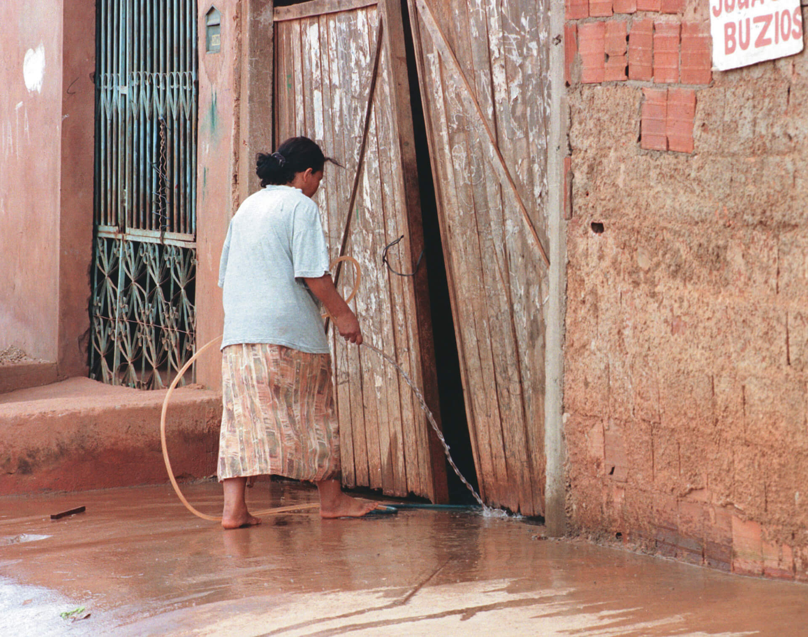
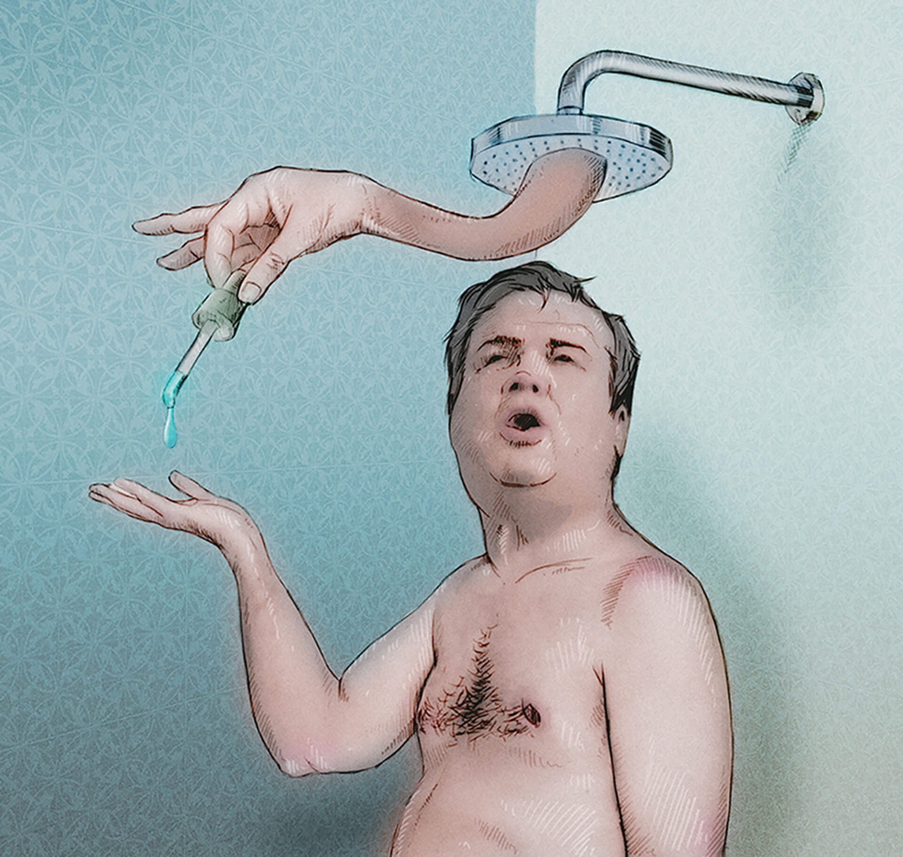

Unidade 05
Insostenibilidad: crisis mundial del agua

D. A Press/CB/José Varella
Para empezar
¿Qué sabes respecto a la crisis mundial del agua?
¿Te sientes personalmente responsabilizado en consumir el agua de forma consciente?
¿Qué medidas son tomadas en tu entorno/casa para garantizar que el agua no sea malgastada?
En un momento en que el calentamiento global, la desertificación y la búsqueda de energía renovable son problemas de gran preocupación, esta unidad trata de presentar una discusión sobre la crisis mundial del agua por medio de
distintos textos. Además de explorar el léxico sobre el tema, valorar datos e informaciones, vamos a estudiar las reglas de eufonía, evitando la cacofonía.
Leyendo y comprendiendo
El ser humano utiliza el agua para diversas actividades: beber, procesos industriales, generación de energía eléctrica, actividad minera, agricultura y ganadería. ¿Te imaginas cuántos litros de agua son necesarios para producir…
Ahora, lee atentamente el texto a continuación y fíjate en las señales de la crisis del agua en el mundo actualmente.
Agua para todos, agua para la vida

Douglas Nogueira. 2015. Digital.
Agua para todos, agua para la vida La Tierra, con sus diversas y abundantes formas de vida, que incluyen a más de 6 000 millones de seres humanos, se enfrenta en este comienzo del siglo veintiuno con una grave crisis del agua.
Todas las señales parecen indicar que la crisis se está empeorando y que continuará haciéndolo, a no ser que se emprenda una acción correctiva. Se trata de una crisis de gestión de los recursos hídricos, esencialmente causada por la
utilización de métodos inadecuados. La verdadera tragedia de esta crisis, sin embargo, es su efecto sobre la vida cotidiana de las poblaciones pobres, que sufren el peso de las enfermedades relacionadas con el agua, viviendo en
entornos degradados y a menudo peligrosos, luchando por conseguir una educación para sus hijos, por ganarse la vida y por solventar a sus necesidades básicas de alimentación. La crisis pesa asimismo sobre el entorno natural, que
cruje bajo la montaña de desechos que se vierten a diario y por el exceso de uso o uso indebido que de él se hace, con aparente desinterés por las consecuencias y por las generaciones
venideras. En realidad, se trata
fundamentalmente de un problema de actitud y de comportamiento, problemas en su mayoría identificables (aunque no todos) y localizables. Actualmente poseemos los conocimientos y la pericia necesarios para abordarlos y hemos
elaborado excelentes herramientas conceptuales, tales como la equidad y la noción de sustentabilidad. Sin embargo, la inercia de los líderes y la ausencia de una conciencia clara sobre la magnitud [del] problema por parte de la
población mundial (en muchos casos no suficientemente autónoma para reaccionar) resultan en un vacío de medidas correctivas oportunas y necesarias y en una incapacidad para infundir a los conceptos de trabajo una resonancia más
concreta. Resolver la crisis del agua es, sin embargo, solo uno de los diversos desafíos con los que la humanidad se enfrenta en este tercer milenio y ha de considerarse en ese contexto. La crisis del agua debe situarse en una
perspectiva más amplia de solución de problemas y de resolución de conflictos. […] Aún así, de todas las crisis, ya sean de orden social o relativas a los recursos naturales con las que nos enfrentamos los seres humanos, la crisis
del agua es la que se encuentra en el corazón mismo de nuestra supervivencia y la de nuestro planeta.
AGUA para todos. Agua para la vida. Disponible en: <http://www.un.org/esa/sustdev/sdissues/water/WWDR-spanish-129556s.pdf>. Consulta: 8 nov. 2014.
eneraciones venideras: el término “venideras” hace referencia al futuro, o sea, a las generaciones que están por llegar o suceder.
El texto, al tratar la crisis mundial del agua, defiende que:
a) hay agua suficiente en el mundo.
b) el uso del agua es mal gestionado.
c) no hay recursos financieros para resolver la crisis.
Según el texto, ¿quiénes son los que más sufren las consecuencias de la crisis?
¿Cómo el entorno natural es afectado por la crisis?
De acuerdo con el texto, ¿es verdadero o falso?
a) (___) La crisis del agua es un problema de comportamiento y de actitud.
b) (___) La escasez de los recursos hídricos afecta solo a las poblaciones sin acceso a la educación formal.
c) (___) No hay una conciencia clara sobre las herramientas necesarias para resolver la crisis hídrica.
d) (___) La crisis del agua se acentúa debido a la inercia de los gobernantes y líderes.
El texto contrapone el desarrollo de nociones de “equidad” y “sustentabilidad” a la falta de:
a) acciones concretas.
b) conocimientos científicos.
c) recursos naturales.
En tu comunidad, ¿cómo las personas actúan frente a la crisis del agua? ¿Hay alguna señal de actuación más concreta?
Observa las cuatro imágenes a continuación sobre el uso del agua y apunta a qué remiten.
Tenemos que ser conscientes que los derechos que disponemos sobre el agua son muchos, pero que también tenemos obligaciones. Es responsabilidad de todos hacer un uso correcto de ella, para asegurar
que todos los ciudadanos del mundo tengan acceso a este recurso, además de conseguir que sea un recurso renovable y duradero.
LÍNEA Verde. Disponible en: <http://www.lineaverdemunicipal.com/consejos-ambientales/ahorro-de-agua.pdf>. Consulta: 8 nov. 2014.
Las expresiones destacadas permiten inferir que, en español, agua:
(___) es un sustantivo femenino.
(___) es un sustantivo masculino.
(___) es un sustantivo sin género definido.
¿Cómo llegaste a esa conclusión?
El fenómeno que se presenta en el fragmento es común en la lengua española y sucede debido a los sonidos que se producen por la junción de determinadas letras. Para evitar la cacofonía, se cambia el artículo, pero la palabra mantiene
el género (masculino/femenino).
Esa utilización distinta de los artículos es regida por las denominadas reglas de eufonía.
Regla 1
Cuando un sustantivo femenino singular empieza por a/ha tónicas, se utiliza el artículo masculino. Por esa razón, tenemos:
“Tenemos que ser conscientes que los derechos que disponemos sobre son
muchos, pero que también tenemos obligaciones. Es responsabilidad de todos hacer un
uso correcto [...]”.
Regla 2
Delante de palabras que empiezan por i/hi, se utiliza la conjunción e para evitar choque vocálico y no pronunciar como si fuesen nombres compuestos. Observa:
El agua es tratada y almacenada.
Los datos e investigaciones sobre el tema son preocupantes.
Con aguja e hilo mi mamá hace marca páginas lindos y ecológicos.
Regla 2
Cuando una palabra empieza por o/ho, se reemplaza la conjunción o por u. Observa:
Se estima que muchas personas van a vivir en zonas con influencia moderada o grave de agua.
El agua se pasa por filtros de arena u otro material que sea apropiado.
Gabriel u Omar
belga u holandés
siete u ocho
Omar o Gabriel
holandés o belga
ocho o siete
Analiza las frases que siguen a continuación y completa de acuerdo con lo que corresponda.
¿Sabías que…?
a) En África __________ Asia, se espera que la población urbana se duplique entre los años 2000 __________ 2030. (y/e)
b) Entre 1998 y 2008, 1052 millones de moradores urbanos adquirieron __________ agua potable y 813 millones a mejoras sanitarias. Sin embargo, la población urbana en ese periodo creció en
1089 millones lo que opaca el progreso logrado. (la/el)
c) 497 millones de personas solo cuentan __________ dependen de instalaciones sanitarias compartidas. (o/u)
d) Los lagos las represas proveen un gran rango de recursos valiosos, incluyendo __________ agua potable, para la irrigación, la navegación, la industria pesquera, el turismo, la
recreación, la gestión de inundaciones __________ sequías. (y/e) (la/el) (y/e)
Fuente: UNESCO. Disponible en: <http://www.unesco.org/water/news/newsletter/244_es.shtml#know>. Consulta: 19 feb. 2015.
Completa con el artículo adecuado.
a) ____ arma
b) ____ ala
c) ____ asa
d) ____ ancla
e) ____ águila
f) ____ alba
g) ____ arca
h) ____ ama de casa
i) ____ aspa
j) ____ arpa
k) ____ hambre
l) ____ habla
m) ____ hada
n) ____ hacha
o) ____ álgebra
p) ____ ascua
q) ____ hampa
r) ____ aula
s) ____ área
t) ____ alga
u) ____ alza
Llena los huecos con y/e:
a) pan _____ vino
b) ingenieros _____ profesores
c) profesores _____ ingenieros
d) lluvia _____ sol
e) azúcar _____ hielo
f) sabio _____ inteligente
g) tú _____ yo
h) explicar _____ identificar
i) aguja _____ hilo
j) madre _____ hija
Llena los huecos con o/h:
a) uno _____ otro
b) seis _____ siete
c) hombres _____ mujeres
d) mujeres _____ hombres
e) siete _____ ocho
f) sueco _____ holandés
g) ocho _____ nueve
h) plata _____ oro
i) filete _____ pollo
j) otoño _____ invierno
Llena los huecos con el/la:
a) _____ área
b) _____ avenida
c) _____ arte
d) _____ hambriento
e) _____ aguja
f) _____ alma
g) _____ aula
h) _____ águila
i) _____ azucena
Investigación
¿Ya oíste hablar de ecodesign y design para la sostenibilidad? ¿Qué sabes acerca de eso? Con tus compañeros, investiga contribuciones de personas y empresas del sector privado para minorar el problema de la escasez de
agua. Comparte con la clase tus descubrimientos.
Oyendo y comprendiendo
Vas a escuchar algunos testigos sobre el uso del agua de personas que viven en distintos países. Tras escucharlos, completa los huecos con las informaciones según corresponda.
a) El primer país del mundo a aprobar una ley que define el agua como bien público fue __________ .
b) El país que hace mal uso del agua comparado con la media mundial es __________ .
c) La sexta mayor oferta de agua del mundo es de __________ .
d) En __________ hay problemas con el suministro de agua.
Ahora asocia las informaciones correctamente, según has oído.
a) Españoles
b) Cubanos
c) Uruguayos
d) Colombianos
(___) Pasaron a usar filtros de arena a causa del problema de la escasez de agua.
(___) Gastan un 88% más de agua que sus vecinos mundiales.
(___) Generan 9 mil toneladas de materia orgánica contaminante de los acuíferos.
(___) Votaron en una ley y desconocen los alcances de los cambios.
(___) Sufren con el aumento de las enfermedades por el deterioro del suministro de agua y de los servicios sanitarios.
(___) Contaminaron más de la mitad de los recursos hídricos de su país.
¿Qué imágenes dialogan con lo que se ha descripto en cada país?
¿está correcta la exploración del agua por grandes compañías comerciales en el mundo?
¿el agua debe ser considerada como un bien de consumo o como un derecho universal del ser humano?
Discute con tus compañeros, apunta tus ideas en relación al tema y, enseguida, conoce algo más sobre esa controversia cuestión en la sección Conexiones.
El 31 de octubre de 2004 el 64% de los ciudadanos uruguayos se pronunció a favor de la reforma constitucional que otorgó al Estado la responsabilidad exclusiva de la gestión del agua y del saneamiento.
Esta reforma ha puesto a Uruguay como el primer país del globo en declarar como derecho humano fundamental el acceso a estos servicios. Luego se adhieren otros países y en 2010 lo hace las Naciones Unidas.
A 10 años de dicha reforma el 98% de la población nucleada posee acceso al agua potable, esto fue posible debido a la implementación de programas, desde OSE, como el de abastecimiento a pequeñas localidades y escuelas rurales.
En 2006, las organizaciones sociales de Argentina, Bolivia, Brasil, Chile, Colombia, Italia, México, Perú, Uruguay y Venezuela reunidas en las jornadas del “Octubre Azul” en Uruguay proclamaron que:
El agua en todas sus formas es un bien común, de dominio público y su acceso es un derecho humano fundamental e inalienable. El agua es un patrimonio de las comunidades, de los pueblos y de la humanidad, principio constitutivo
de la vida en nuestro planeta. El agua no es mercancía. Por eso rechazamos todas las formas de privatización, inclusive la asociación pública-privada que han mostrado su total fracaso en todo el planeta, así como las empresas
que aún siendo públicas funcionan bajo el régimen privado.
La gestión y el control deben permanecer en el ámbito público, social, comunitario, participativo, con equidad y sin fin de lucro. Es obligación de todas las instituciones públicas locales, nacionales e internacionales
garantizar estas condiciones desde la planificación hasta el control final del proceso. Se debe garantizar la solidaridad entre las generaciones presentes y futuras, por eso rechazamos este modelo desarrollista, neoliberal y
consumista que promueve la sobre-explotación de la madre naturaleza.
BIODIVERSIDAD en América Latina y El Caribe. Disponible en:
<http://www.biodiversidadla.org/Principal/Secciones/Documentos/Biodiversidad_en_America_Latina/Uruguay_Proclama_del_Octubre_Azul_el_agua_es_un_patrimonio_de_las_comunidades_de_los_pueblos_y_de_la_humanidad>. Consulta: 23
ene. 2015.
Ahora, lee el texto a continuación. En él, vas a encontrar un posicionamiento totalmente contrario – que incentiva el uso del agua comercialmente.
Agua el negocio del siglo
Un estudio reciente del Banco Mundial concluye que el agua será indudablemente el negocio del siglo XXI, equivalente a lo que los combustibles han sido para el presente.
Según lo describe Osvaldo Canziani, Premio Nobel de la Paz, el agua se convertirá en un negocio de trillones de dólares.
Y es que no es para menos pues los efectos del cambio climático son cada vez más severos y es evidente que dejar la responsabilidad a los gobiernos de encontrar soluciones por si mismos es algo iluso y descabellado.
Así pues, las soluciones tienen que venir de la empresa privada. Tienen que surgir en la mente de emprendedores que puedan aportar sus ideas, talento y creatividad para proponer dichas soluciones y en el camino, eso representa,
como bien lo dice Canziani, una oportunidad de negocios multimillonaria.
Y aunque el agua es un patrimonio de la humanidad, comprender el problema es una cosa y dimensionarlo es otra. Y como estamos hablando de un problema de grandes proporciones, así mismo de grande serán las distintas alternativas que
pueden existir para innovar e incursionar en el negocio del agua.
AMAYA, Edwin. Agua el negocio del siglo. Disponible en: <http://www.1000ideasdenegocios.com/2011/11/agua-el-negocio-del-siglo-15-ideas.html>. Consulta: 23 ene. 2015.
A ideia apresentada no título do texto em relação “ao bom negócio” que a água será neste século encontra respaldo quando se apresenta(m):
a) os valores financeiros que esse negócio vai gerar.
b) o depoimento de pessoas que estão precisando de água.
c) a defesa de que a água é patrimônio da humanidade.
d) a existência de pessoas criativas e inovadoras.
e) as alternativas de gestão pública que precisarão ser desenvolvidas.
O uso de um argumento de autoridade – exposição de uma afirmação de um ganhador do Prêmio Nobel da Paz – tem como objetivo:
a) convencer o leitor de que tratar a água como um negócio não é uma questão imoral.
b) demonstrar que as pessoas que ganharam o Prêmio Nobel apenas se preocupam em ganhar dinheiro.
c) reiterar a ideia de que a paz mundial dependerá dos ganhos multimilionários de quem explorar a água comercialmente.
d) satirizar os gestores públicos que não têm capacidade para gerenciar esse recurso natural.
e) solapar a opinião de pesquisadores e agências de investigação, priorizando uma afirmação sem validade científica.
De acordo com o texto, os fatores que indicam a necessidade de a iniciativa privada assumir a gestão da água são:
a) incapacidade dos gestores públicos.
b) potencial de lucro que esse negócio terá.
c) preocupação com a qualidade de vida das pessoas.
d) defesa da água como um patrimônio da humanidade.
e) necessidade de garantir o acesso (e o direito) à água a todas as pessoas.
Você está de acordo com as ideias apresentadas no texto?
En la cocina: ¿Cómo lavas la vajilla y los cacharros?
a) A mano con grifo a chorro.
b) A mano con un fregado economizador.
c) Con lavavajillas.
d) Con lavavajillas y programas cortos.
e) Con lavavajillas modelo economizador.
En el cuarto de baño:
a) ¿Cuántas duchas tomas a la semana?
b) ¿Cuántos minutos pasas bajo la ducha?
c) ¿Cuántos baños de bañera completa te das al año?
d) ¿Cuántas veces te lavas los dientes al día?
Consumo de agua – usos hogareños
Descarga de inodoro
20 litros
Ducha breve (10 min)
80 litros
Carga de lavarropas
100 litros
Baño de inmersión
150 litros
Lavado de coche
500 litros
a) ¿Qué cantidad de agua gasta tu familia? Calcula la cantidad de agua que se gasta (aproximadamente) en tu casa en un día.
b) ¿Crees que existe la necesidad de hacer cambios en el uso del agua? ¿Estarías dispuesto a implementar cambios en tus actitudes y en tu casa? ¿Cuáles?
Te toca a ti
A partir de la charla que has entablado y ya más consciente de tus hábitos en relación al consumo de agua, produce un infográfico en el cual describas lo que consumes de agua, los recursos para optimizar el uso del agua u otro tema
relacionado al uso racional del agua que sea de tu interés. Utíliza el "Organízate", a continuación, para crear la estructura de tu texto.
Puedes buscar datos sobre:
tu casa;
la escuela;
tu comunidad.
Después de compiladas las informaciones, organiza, con la ayuda de tu profesor, una exposición con los datos para toda la comunidad escolar y presenta tu infográfico.
Organízate
Antes de producir tu infográfico, ten en cuenta algunas informaciones que pueden ayudarte a planearlo.
Define qué informaciones vas a transmitir/ difundir
Busca los datos que van a componer el texto en una fuente segura
Define cuál es la mejor forma de presentación, considerando el público a que se destina
Selecciona las imágenes que van a acompañar los datos
No te olvides de presentar todas las partes que componen un infográfico:
el título;
las imágenes;
el texto sucinto y explicativo;
la fuente de los datos.
Conexiones
Hippo Water Roller
Creado en Sudáfrica por Grant Gibbs, el Hippo Water Roller es un contenedor diseñado para transportar 90 litros de agua. En Sudáfrica, como en otros países africanos, las comunidades están a menudo situadas lejos de los recursos
hídricos y el transporte de agua hacia los pueblos es una función asegurada en la mayoría de los casos por las mujeres y los niños. Simple y eficaz, este recipiente permite reducir los esfuerzos y los tiempos largos requeridos por
los métodos tradicionales de trasporte de cargas pesadas de agua en equilibrio sobre la cabeza.
El Hippo Water Roller se compone de un tambor con una gran tapa y un mango de acero. El tambor está fabricado en polietileno UV estabilizado y ha sido diseñado para soportar las condiciones rurales típicas tales como senderos
irregulares, piedras y botellas rotas. [...] El mango de acero proporciona un control firme mientras se empuja o se tira el tambor sobre los terrenos difíciles. El diseño innovador permite que el agua se coloque dentro del tambor en
lugar de llevarse por encima. El peso de 90 kg de agua recae en el suelo, resultando para la persona en un peso efectivo de sólo 10 kg en un terreno llano. [...]
En Sudáfrica, donde el proyecto se implementa desde hace 20 años, más de 300 000 personas utilizan este contenedor para llevar agua. [...] La fabricación y distribución del Hippo Roller para el transporte de agua se realiza tanto
en Sudáfrica como a nivel internacional con el apoyo de empresas de inversión social, gobiernos, ONG y otras organizaciones donantes. [...]
El ser humano genera cada vez más residuos tóxicos y contaminantes que crean un gran impacto en el medio ambiente. El cambio climático es una realidad y sus efectos interfieren en nuestra salud y en la del planeta. Estas
consecuencias irán a más en un futuro, y para intentar evitar o reducirlas, en los próximos años surgirán nuevas profesiones relacionadas con la ecología y el medio ambiente.
Si te interesa la naturaleza y el medio ambiente y quieres dedicarte a mejorarlos, no lo dudes y especialízate en una de estas profesiones.
Creación de microclimas
Debido al calentamiento global y a todos sus efectos, muchas zonas necesitarán de expertos en creación de microclimas artificiales. De esta manera se conservarán las condiciones climáticas naturales de la zona, así como se
generarán unas condiciones de temperatura y limpieza del aire óptimas.
Se necesitarán diseñadores, arquitectos, biólogos y meteorólogos que se especialicen en esta materia y que investiguen en nuevos materiales para la construcción y en las condiciones climáticas adecuadas.
Reversión del cambio climático
El cambio climático no sólo afecta a las condiciones climáticas del planeta, sino que sus efectos influyen en la salud de los seres humanos y en el desarrollo de enfermedades, en nuestra forma de vida, y en la supervivencia del
ecosistema en general. Por este motivo cada vez es más imprescindible la investigación y construcción de mecanismos que nos permitan revertir o reducir estos efectos devastadores. Esta profesión requerirá ingenieros ambientales
especializados, carrera que ya es de las que más han crecido en los últimos años.
Todas estas nuevas profesiones, así como la necesidad de provocar fenómenos meteorológicos, comportará la aparición de un nuevo tipo de policía. Muchos países, por ejemplo, ya tratan de provocar lluvia mediante la explosión de
cohetes que contienen yodo de plata. Los policías del clima se encargarán de controlar, vigilar y autorizar todas estas actividades. Estos profesionales deberán ser expertos en meteorología e, incluso, en ingeniería medioambiental.
Por los mismos motivos también se necesitarán abogados ambientalistas, que regulen toda la legislación del medio ambiente. Los licenciados en derecho pueden especializarse en esta rama con masters y postgrados.
Clonación forestal
La clonación también tendrá su lugar en el medio ambiente. La deforestación, la construcción masiva, los efectos del cambio climático… están haciendo que se pierdan muchas especies animales y vegetales a ritmos cada vez mayores,
afectando gravemente a nuestra salud. En un futuro se prevé la existencia de expertos en clonación forestal que trabajen para regenerar árboles y cultivos, que estudien las características y la calidad de la madera y otros
materiales naturales o que recuperen especies extinguidas y eviten la extinción de otras.
Para evitar la contaminación y el impacto que el ser humano está provocando en el medio ambiente en los próximos años crecerá la importancia de los expertos en reciclaje. Actualmente esta ya es una figura muy presente en nuestra
sociedad, pero cada vez generamos más residuos tóxicos y contaminantes. Por eso ingenieros, químicos, físicos, biólogos y geógrafos tendrán que estudiar nuevas formas de tratamiento de residuos y reciclaje.
En este campo la química ecológica tendrá un papel importante, ya que ayudará a la elaboración de productos menos tóxicos y agresivos con el medio ambiente.
IBERESTUDIOS. 5 profesiones de futuro en ecología y medio ambiente. Disponible en: <http://noticias.iberestudios.com/5-profesiones-de-futuro-en-ecologia-y-medio-ambiente/>. Consulta: 31 ago. 2015.